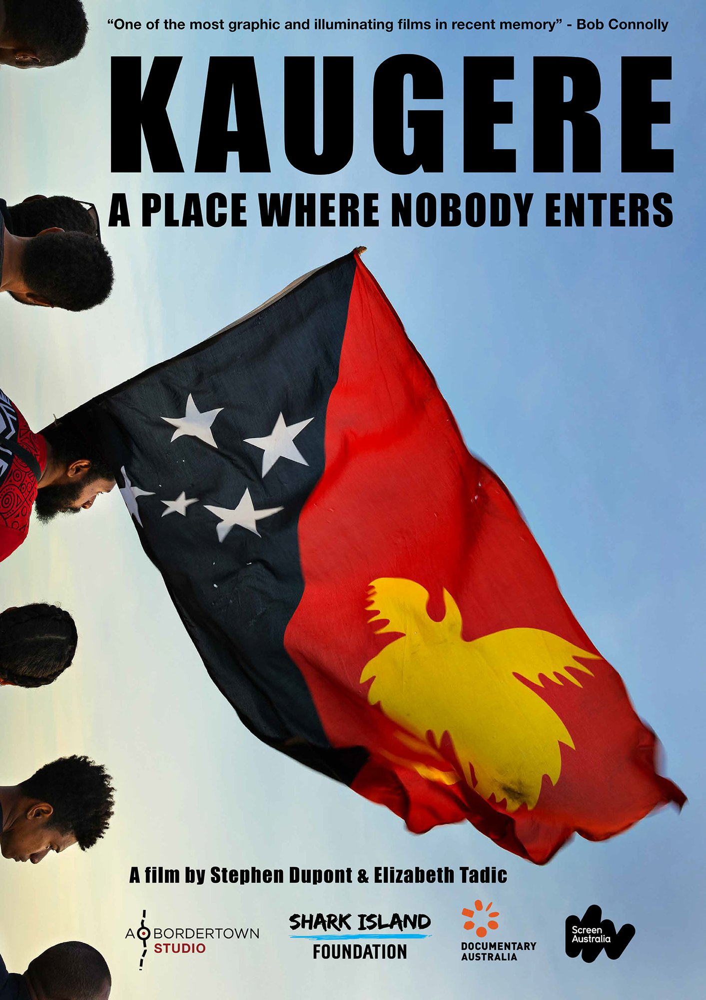

Stephen Dupont
'Kaugere - A Place Where Nobody Enters'
Recent Work
Stephen's work hangs in museums and galleries around the world. He has appeared in dozens of publications including The New Yorker, Aperture, Newsweek, Time, Le Figaro and Vanity Fair. He has been awarded many prestigious photographic awards including two Walkleys, a Robert Capa Gold Medal citation, a Bayeux-Calvados War Correspondents Prize and first place in the World Press Photo and Pictures of the Year International.
Awards
- 2016 Oliver Rebbot Award for Photography, Overseas Press Club of America
- 2010 Robert Gardner Fellowship in Photography, Harvard's Peabody Museum
- 2007 W. Eugene Smith Grant for Humanistic Photography
Solo Exhibitions
- 2018 Why Am I A Marine/Axe Me Biggie, War Photo Ltd, Dubrovnik, Croatia
- 2017 Piksa Niugini, Monash Gallery of Art MGA, Melbourne, Australia
- 2016 The White Sheet Series, Stills Gallery, Sydney, Australia
- 2014 Papua New Guinea Portraits, Museo Castilo de la Real Fuerza, Havana, Cuba
- 2013 New Guinea Portraits & Diaries, The Peabody Museum of Archaeology & Ethnology, Harvard USA
- 2012 Weapons Platoon: A Marine’s Life in Afghanistan, National Museum of the Marine Corp, Qantico, VA, USA
- 2008 Afghanistan, or The Perils of Freedom, The New York Public Library Stokes Gallery, New York, USA
Group Exhibitions
- 2019 Your Mirror: Portraits from the ICP Collection, International Center of Photography, New York City, USA
- 2018 LEGACY. Your collection. Our story. Monash Gallery of Art, Melbourne, Australia
- 2018 Not An Ostrich and other images from America's Library, Annenberg Space for Photography, Los Angeles, USA
- 2017 Unwavering Vision #1: 3160 Images of Social Change from the ICP Collections, International Center of Photography, New York, USA
- 2016 Aftermath: The Fallout o War - America and the Middle Eat, Harn Museum of Art. University of Florida, Gainesville, FL, USA
- 2014-2015 Public Eye: 175 Years of Sharing Photography, The New York Public Library, New York, USA
- 2015 Bookmarked, STILLS Gallery, Sydney, Australia
Books
- 2018 Why AM I A Marine/Axe Me Biggie, War Photo Ltd, Croatia
- 2015 GENERATION AK: The Afghanistan Wars 1993 - 2012, STEIDL, Germany
- 2013 PIKSA NIUGINI: Stephen Dupont’s Portraits & Diaries, Peabody Press, Radius Books, USA
- 2012 RASKOLS: The Gangs of Papua New Guinea, powerHouse, NY, USA
- 2008 AFGHANISTAN, or The Perils of Freedom, New York Public Library, USA
- 2003 FIGHT/LUTTE, Edition Braus, Germany
- 1999 STEAM: India’s Last Steam Trains, Dewi Lewis Publishing, UK
Clients
- The New Yorker
- Time
- Aperture
- The Guardian
- New York Times Magazine
- The Australian Financial Review Magazine
- Vanity Fair
- Newsweek
- GQ